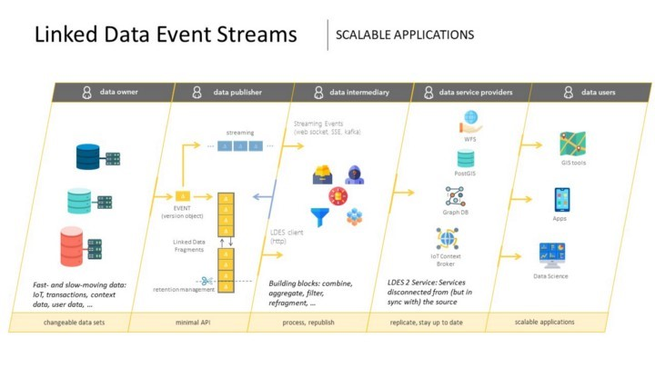

LDES Server
The Linked Data Event Stream (LDES) server is a configurable component that can be used to ingest, store, and (re-)publish one or multiple Linked Data Event Stream(s). The open-source LDES server is built in the context of the VSDS project to exchange (Open) Data easily.

The server can be configured to meet the organisation’s specific needs. Functionalities include retention policy, fragmentation, deletion, create a snapshot and pagination for managing and processing large amounts of data more efficiently and ensuring the efficient use of storage.

The LDES server is available as on open-source building block on [GitHub](https://github.com/Informatievlaanderen/VSDS-LDESServer4J)
Setting up the LDES Server during startup process
Ingesting sources (HTTP in)
The LDES server is able to receive data via HTTP ingestion. Specifically, the server expects a single object (member) to be sent as input via a POST request. If the dataset still contains state objects, each of these must first be converted to a version object before being ingested in the server. This essential step ensures the ingested objects comply with the LDES definition.
Once the objects in the dataset are LDES-compliant members (whether or not after conversion to a version object) and the LDES member has been added to the LDES server, the server can effortlessly publish the LDES member as part of the LDES.
More information on the HTTP ingestion can be found here.
Example HTTP Ingest-Fetch Configuration:
server.port: { http-port }
ldes:
collection-name:
{
short name of the collection,
cannot contain characters that are used for url interpretation,
e.g.’ $’,
‘=’ or ‘&’,
}
host-name: { hostname of LDES Server }
member-type:
{
Defines which syntax type is used to define the member id e.g. “https://data.vlaanderen.be/ns/mobiliteit#Mobiliteitshinder”,
}
timestamp-path:
{
SHACL property path to the timestamp when the version object entered the event stream.,
}
version-of:
{ SHACL property path to the non-versioned identifier of the entity. }
validation:
shape: { URI to defined shape }
enabled: { Enables/Disables shacl validation on ingested members }
rest:
max-age:
{
time in seconds that a mutable fragment can be considered up-to-date,
default when omitted: 60,
}
max-age-immutable:
{
time in seconds that an immutable fragment should not be refreshed,
default when omitted: 604800,
}
SHACL
The LDES specification prescribes that each LDES must link to a SHACL shape, providing a machine-readable definition of the members in the collection. If a SHACL shape was provided on startup, the LDES server reads it before the ingestion process starts and the SHACL shape is used to validate the ingested members. Only valid members are ingested in the LDES server. When starting the server, it is possible to provide a SHACL shape via through an RDF file. At last, the SHACL shape is also published as part of the LDES on the Web.
SHACL stands for Shapes Constraint Language and is used to define a set of constraints which are used to verify to conformity of RDF data with these constraints.
The SHACL shape specifies the expected properties of an LDES members and the constraints that must be followed to ensure the LDES member adheres to the expected structure and semantics. It defines properties such as required properties, allowed property values, and the data types expected for the properties.
For more information about the SHACL shape and its structure, go to here. More information on how to provide an RDF file, containing a SHACL shape, to the LDES server can be found here.
Fragmentation
To reduce the volume of data that consumers need to replicate or to speed up certain queries, the LDES server can be configured to create several fragmentations. Fragmentations are similar to indexes in databases but then published on the Web. The RDF predicate on which the fragmentation must be applied is defined through configuration.

The fragmenting of a Linked Data Event Stream (LDES) is a crucial technique for managing and processing large amounts of data more efficiently. There are three main methods of fragmentation: geospatial, time-based, and substring fragmentation.
Partitioning
When applying partitioning, the LDES server will create fragments based on the order of arrival of the LDES member, and is a linear fragmentation. This fragmentation is considered the most basic and default fragmentation because it stands for the exact reason the LDES specification was created: replication and synchronising with a dataset. The members arriving on the LDES server are added to the first page, while the latest members are always included on the latest page.
The expected parameter to apply a partioning is a member limit, indicating the amount of members that can be added to each page before creating a new page.
name: “pagination”
config:
memberLimit: { Mandatory: member limit > 0 }
Algorithm
- The fragment to which the member should be added is determined.
- The currently open fragment is retrieved from the database.
- If this fragment contains members equal to or exceeding the member limit or no fragment can be found, a new fragment is created instead.
- If a new fragment is created, the following steps are taken.
- The new fragment becomes the new open fragment and the previous fragment becomes immutable1.
- This newly created fragment and the previous fragment are then linked with each other by 2 generic relationships1.
- The pagenumber of the new fragment is determined based on the old fragment or is set to 1 in case of the first fragment.
1 In case of the first fragment, a previous fragment does not exist so these steps are skipped.

Example properties
name: "pagination"
config:
memberLimit: 10
Substring fragmentation
Substring fragmentation involves dividing the data stream into smaller pieces based on specific substrings, or patterns, within the data.
Example of substring fragmentation configuration file
name: “substring”
config:
fragmenterProperty: { Defines which property will be used for bucketizing }
memberLimit: { member limit > 0 }
Example
Example properties:
name: "substring"
config:
fragmenterProperty: "https://data.vlaanderen.be/ns/adres#volledigAdres"
memberLimit: 10
With following example input:
@prefix prov: <http://www.w3.org/ns/prov#> .
@prefix xsd: <http://www.w3.org/2001/XMLSchema#> .
<https://data.vlaanderen.be/id/adres/1781020/2023-02-15T10:14:36.002Z>
<https://data.vlaanderen.be/ns/adres#isVerrijktMet> [
<https://data.vlaanderen.be/ns/adres#volledigAdres> "Kazernestraat 15, 9160 Lokeren"@nl
] ;
prov:generatedAtTime "2023-02-15T10:14:36.002Z"^^xsd:dateTime ;
a <https://data.vlaanderen.be/ns/adres#Adres> .
The selected object would be “Kazernestraat 15, 9160 Lokeren”.
The bucket of substrings would be:
- K
- Ka
- Kaz
- …
- Kazernestraat 15, 9160 Lokeren
If this is the first member of the collection it would be added to fragment ‘k’ and available at http://localhost:8080/addresses/by-name?substring=k and not in ka or any other substring fragment.
In a scenario where there are already 10 addresses starting with ‘k’ and only 2 with ‘ka’, it would be added to http://localhost:8080/addresses/by-name?substring=ka
Note that this is all lowercase.
Time-based fragmentation
Time-based fragmentation has not yet been implemented.

Example of a time-based fragmentation configuration file
name: “timebased”
config:
memberLimit: { member limit > 0 }
Algorithm This fragmentiser will create an initial fragment with the current timestamp when processing a member. Members are added to the fragment until the member limit is reached. When the fragment member limit is reached, a next fragment is created with a new current timestamp.
Reasons for deprecating this fragmentiser:
- This fragmentiser follows the algorithm of pagination but without the semantics.
- For a correct timebased fragmentation, members of the fragment should be checked and their value for a given property should be used to create the correct relations. This is not the case, and there is currently no demand to have this implemented.
Geospatial fragmentation
Consider the scenario where the address registry is published as an LDES that using partitioning. In such a case, data consumers are required to replicate the entire linear set of fragments, despite only being interested in a smaller subset of the dataset. For instance, the city of Brussels may only require addresses within its geographical region and is not interested in other addresses. However, with the partitioned LDES, they would need to iterate through all the fragments and filter the LDES members (address version objects) on the client-side. By utilising geospatial fragmentation, the data can be divided into smaller pieces (tiles) based on geographical location. This facilitates filtering on the fragment level (tiles) and allows for processing and analysis of data within specific geospatial tiles.

The geospatial fragmentation supported by the LDES server is based on the “Slippy Maps” algorithm. The fragmentation expects a zoom level parameter which is used by the algorithm to divide the “world” into tiles. The number of tiles if 2^2n^ (where n = zoom level). The second expected parameter is an RDF predicate, indicating on which property of the LDES member the fragmentation should be applied. More information about the algorithm used to apply a geospatial fragmentation can be found here.
The required configuration for this fragmentation is:
-
RDF predicate on which the fragmentation should be based
-
Zoom level
Example of geospatial fragmentation configuration file
name: “geospatial”
config:
maxZoomLevel: { Required zoom level }
fragmenterProperty: { Defines which property will be used for bucketizing }
Algorithm
- The fragmentationObjects of the member are determined
- We filter the RDF statements where the predicate matches the
fragmenterProperty - If an optional regex is provided through the
fragmenterSubjectFilterproperty, we filter on subjects that match this regex. - We select all the object that pass the above filters.
- We filter the RDF statements where the predicate matches the
- A bucket of tiles is created using the coordinates and provided zoomLevel. This is done using the Slippy Map algorithm.
- The tiles are iterated. The member is added to every tile, or sub-fragmentations of these tiles1. Taking into account:
- A new fragment is created if no fragment exists for the given tile.
- There is no
memberLimitor max size for a fragment. They do not become immutable. - The member is added to every related fragment
1 If the geospatial fragmentation is not the lowest fragmentation level, the member is not added to the tile but to a subfragment on this tile. This case is included in the example below.

Example
Example properties:
name: "geospatial"
config:
maxZoomLevel: 15
fragmenterProperty: "http://www.opengis.net/ont/geosparql#asWKT"
With following example input:
@prefix dc: <http://purl.org/dc/terms/> .
@prefix ns0: <http://semweb.mmlab.be/ns/linkedconnections#> .
@prefix xsd: <http://www.w3.org/2001/XMLSchema#> .
@prefix ns1: <http://vocab.gtfs.org/terms#> .
@prefix prov: <http://www.w3.org/ns/prov#> .
@prefix ns2: <http://www.opengis.net/ont/geosparql#> .
@prefix rdfs: <http://www.w3.org/2000/01/rdf-schema#> .
@prefix geo: <http://www.w3.org/2003/01/geo/wgs84_pos#> .
<http://njh.me/original-id#2022-09-28T17:11:28.520Z>
dc:isVersionOf <http://njh.me/original-id> ;
ns0:arrivalStop <http://example.org/stops/402161> ;
ns0:arrivalTime "2022-09-28T07:14:00.000Z"^^xsd:dateTime ;
ns0:departureStop <http://example.org/stops/402303> ;
ns0:departureTime "2022-09-28T07:09:00.000Z"^^xsd:dateTime ;
ns1:dropOffType ns1:Regular ;
ns1:pickupType ns1:Regular ;
ns1:route <http://example.org/routes/Hasselt_-_Genk> ;
ns1:trip <http://example.org/trips/Hasselt_-_Genk/Genk_-_Hasselt/20220928T0909> ;
a ns0:Connection ;
prov:generatedAtTime "2022-09-28T17:11:28.520Z"^^xsd:dateTime .
<http://example.org/stops/402161>
ns2:asWKT "POINT (5.47236 50.9642)"^^ns2:wktLiteral ;
a ns1:Stop ;
rdfs:label "Genk Brug" ;
geo:lat 5.096420e+1 ;
geo:long 5.472360e+0 .
<http://example.org/stops/402303>
ns2:asWKT "POINT (5.49661 50.9667)"^^ns2:wktLiteral ;
a ns1:Stop ;
rdfs:label "Genk Station perron 11" ;
geo:lat 5.096670e+1 ;
geo:long 5.496610e+0 .
The selected objects would be
"POINT (5.47236 50.9642)"^^ns2:wktLiteral and "POINT (5.49661 50.9667)"^^ns2:wktLiteral
When we convert these coordinates to tiles, the bucket of tiles would be:
- “15/16884/10974”
- “15/16882/10975”
When geospatial fragmentation is the lowest level
After ingestion the member will be part of the following two fragments
- http://localhost:8080/addresses/by-zone?tile=15/16884/10974
- http://localhost:8080/addresses/by-zone?tile=15/16882/10975
When we have a timebased sub-fragmentation below geospatial fragmentation
After ingestion the member will be part of the following two fragments
- http://localhost:8080/addresses/by-zone-and-time?tile=15/16884/10974&generatedAtTime=2023-02-15T10:14:28.262Z
- http://localhost:8080/addresses/by-zone-and-time?tile=15/16882/10975&generatedAtTime=2023-02-15T10:14:28.262Z
Note that the generatedAtTime=2023-02-15T10:14:28.262Z is an example, this can be any other fragmentation.
Combining geospatial fragmentation and partioning
The LDES server typically adds an LDES member to the “lowest” possible fragment, which in the case of geospatial fragmentation, would be the fragment representing the corresponding geospatial tile. However, some fragments/tiles may have many members, while others may have none. In the worst-case scenario, all members may be added to one geospatial tile/fragment, leading to an enormous fragment. Combining geospatial fragmentation with partitioning can be a useful approach to mitigate this issue. Then partitioning is applied within every geospatial tile, resulting in a set of linear fragments for every geospatial tile. Doing so, all members can still end up in the same geospatial tile, but now clients have a set of linear fragments to iterate through instead of one enormous fragment. More detailed information is available in the example below.
Retention policy
A retention policy determines how long data will be kept and stored. Its purpose is to ensure the efficient use of storage resources by controlling data growth over time. Setting a retention policy per view to minimise storage fill-up is possible.

Implementing a retention policy helps organisations maintain control over their data growth and ensure that storage resources are used optimally. The policy specifies the maximum duration that data should be kept.
Time based retention policy
The time-based retention policy can be configured using the ISO 8601 duration format. This time-based policy ensures that data is automatically deleted after a specified period, freeing up valuable storage space for new data.
@prefix ldes: <https://w3id.org/ldes#> .
@prefix tree: <https://w3id.org/tree#>.
@prefix xsd: <http://www.w3.org/2001/XMLSchema#> .
@prefix server: <http://localhost:8080/mobility-hindrances/> .
server:time-based-retention tree:viewDescription [
ldes:retentionPolicy [
a ldes:DurationAgoPolicy ;
tree:value "PT5M"^^xsd:duration ;
] ;
] .
duration: “PT5M”
As an example, the time-based retention configuration example above is set up to ensure that data is automatically deleted after 5 minutes (PT5M).
Point-in-time retention policy
The point in time retention policy of the Linked Data Event Stream (LDES) only preserves the members created after a specific moment. In this way, only the members made after a given point in time retain.
@prefix ldes: <https://w3id.org/ldes#> .
@prefix tree: <https://w3id.org/tree#>.
@prefix xsd: <http://www.w3.org/2001/XMLSchema#> .
@prefix server: <http://localhost:8080/mobility-hindrances/> .
server:point-in-time-retention tree:viewDescription [
ldes:retentionPolicy [
a ldes:PointInTimePolicy ;
ldes:pointInTime "2023-04-12T00:00:00"^^xsd:dateTime
] ;
] .
Version-based retention policy
The version-based retention policy of the system ensures that only the x most recent members of each state object are retained. In this way, only the x most recent members of each state object retain.
@prefix ldes: <https://w3id.org/ldes#> .
@prefix tree: <https://w3id.org/tree#>.
@prefix xsd: <http://www.w3.org/2001/XMLSchema#> .
@prefix server: <http://localhost:8080/mobility-hindrances/> .
server:version-based-retention tree:viewDescription [
ldes:retentionPolicy [
a ldes:LatestVersionSubset;
ldes:amount 2 ;
] ;
] .
Hosting the LDES stream SHACL shape
SHACL (Shapes Constraint Language) is a language used to validate RDF graphs against a set of conditions provided as shapes and other constructs in an RDF graph. The LDES Server facilitates hosting a SHACL shape describing the members in the LDES. Through configuration, it is possible to reference an existing SHACL shape via an URL or to provide a static file with an RDF description of the SHACL shape.
Hosting DCAT metadata
DCAT is a standardised RDF vocabulary to describe data catalogues on the Web, allowing easy interoperability between catalogues. Using a standard schema, DCAT enhances discoverability and facilitates federated search across multiple catalogues.
The LDES server facilitates hosting DCAT metadata when publishing an LDES. Through configuration, as with the SHACL shape, it is possible to reference an existing DCAT via an URI or to provide a static file containing an RDF description of the DCAT. More information on configuring DCAT on the LDES Server can be found here.
Add DCAT configuration for the LDES server
@prefix dct: <http://purl.org/dc/terms/> .
@prefix dcat: <http://www.w3.org/ns/dcat#> .
[] a dcat:Catalog ;
dct:title "My LDES'es"@en ;
dct:description "All LDES'es from publiser X"@en .
Add DCAT metadata for a LDES
@prefix dcat: <http://www.w3.org/ns/dcat#> .
@prefix dc: <http://purl.org/dc/terms/> .
[] a dcat:Dataset ;
dc:title "My LDES"@en ;
dc:description "LDES for my data collection"@en .
####
Setting up the LDES Server using API
Setup of the LDES Server
To start a default LDES Server, a few basic steps are needed.
- Create a
ldes-server.ymlconfig file with this basic content
mongock:
migration-scan-package: VSDS
springdoc:
swagger-ui:
path: /v1/swagger
ldes-server:
host-name: "http://localhost:8080"
management:
tracing:
enabled: false
spring:
data:
mongodb:
database: ldes
host: ldes-mongodb
port: 27017
auto-index-creation: true
- Create a local
docker-compose.ymlfile with the content below.
version: "3.3"
services:
ldes-server:
container_name: basic_ldes-server
image: ghcr.io/informatievlaanderen/ldes-server:20230602200451
environment:
- SPRING_CONFIG_LOCATION=/config/
volumes:
- ./ldes-server.yml:/config/application.yml:ro
ports:
- 8080:8080
networks:
- ldes
depends_on:
- ldes-mongodb
ldes-mongodb:
container_name: quick_start_ldes-mongodb
image: mongo:6.0.4
ports:
- 27017:27017
networks:
- ldes
networks:
ldes:
name: quick_start_network
- Run
docker compose upwithin the work directory ofdocker-compose.ymlfile to start the containers.
Setting up metadata for the server
Setting up metadata for your LDES Server can be done by posting a RDF object defining a DCAT catalog to /admin/api/v1/dcat
@prefix dct: <http://purl.org/dc/terms/> .
@prefix dcat: <http://www.w3.org/ns/dcat#> .
@prefix foaf: <http://xmlns.com/foaf/0.1/> .
@prefix org: <http://www.w3.org/ns/org#> .
@prefix legal: <http://www.w3.org/ns/legal#> .
@prefix m8g: <http://data.europa.eu/m8g/> .
@prefix locn: <http://www.w3.org/ns/locn#> .
[] a dcat:Catalog ;
dct:title "My LDES'es"@en ;
dct:description "All LDES'es from publiser X"@en ;
dct:publisher <http://sample.org/company/PublisherX> .
<http://sample.org/company/PublisherX> a legal:LegalEntity ;
foaf:name "Data Publishing Company" ;
legal:legalName "Data Publishing Company BV" ;
m8g:registeredAddress [
a locn:Address ;
locn:fullAddress "Some full address here"
] ;
m8g:contactPoint [
a m8g:ContactPoint ;
m8g:hasEmail "info@data-publishing-company.com"
] .
This can be updated by performing a PUT operation with an updated DCAT catalog on /admin/api/v1/dcat/{catalogID}
Finally, to delete the catalog, a DELETE request can be performed at /admin/api/v1/dcat/{catalogID}
Further documentation can be found on the internal Swagger API available at `/v1/swagger`
Setting up a collection
Setting up a collection on the LDES Server can be done by posting a RDF object defining a collection to /admin/api/v1/eventstreams
@prefix ldes: <https://w3id.org/ldes#> .
@prefix custom: <http://example.org/> .
@prefix dcterms: <http://purl.org/dc/terms/> .
@prefix tree: <https://w3id.org/tree#>.
@prefix sh: <http://www.w3.org/ns/shacl#> .
@prefix server: <http://localhost:8080/> .
@prefix xsd: <http://www.w3.org/2001/XMLSchema#> .
server:exampleCollection a ldes:EventStream ;
ldes:timestampPath dcterms:created ;
ldes:versionOfPath dcterms:isVersionOf ;
custom:memberType <https://data.vlaanderen.be/ns/mobiliteit#Mobiliteitshinder> ;
custom:hasDefaultView "true"^^xsd:boolean ;
tree:shape [
sh:closed "true";
a sh:NodeShape ;
] .
This collection can be deleted by performing a DELETE request on /admin/api/v1/eventstreams/{collectionName}
Further documentation can be found on the internal Swagger API available at `/v1/swagger`
Setting up metadata for collection
To add metadata to an inserted collection, one can post a DCAT dataset on /admin/api/v1/eventstreams/{collectionName}/dcat
@prefix dct: <http://purl.org/dc/terms/> .
@prefix dcat: <http://www.w3.org/ns/dcat#> .
@prefix foaf: <http://xmlns.com/foaf/0.1/> .
@prefix org: <http://www.w3.org/ns/org#> .
@prefix legal: <http://www.w3.org/ns/legal#> .
@prefix m8g: <http://data.europa.eu/m8g/> .
@prefix locn: <http://www.w3.org/ns/locn#> .
[] a dcat:Dataset ;
dct:title "My LDES"@en ;
dct:title "Mijn LDES"@nl ;
dct:description "LDES for my data collection"@en ;
dct:description "LDES vir my data-insameling"@af ;
dct:creator <http://sample.org/company/MyDataOwner> .
<http://sample.org/company/MyDataOwner> a legal:LegalEntity ;
foaf:name "Data Company" ;
legal:legalName "Data Company BV" ;
m8g:registeredAddress [
a locn:Address ;
locn:fullAddress "My full address here"
] ;
m8g:contactPoint [
a m8g:ContactPoint ;
m8g:hasEmail "info@data-company.com"
] .
To update this entry, a PUT request can be performed on /admin/api/v1/eventstreams/{collectionName}/dcat.
Similarly, a DELETE request can be performed on /admin/api/v1/eventstreams/{collectionName}/dcat
Further documentation can be found on the internal Swagger API available at `/v1/swagger`
Setting up a view
Setting up a view on the LDES Server can be done by performing a POST operation with a RDF object defining a collection to /admin/api/v1/eventstreams/{collectionName}/views
@prefix ldes: <https://w3id.org/ldes#> .
@prefix tree: <https://w3id.org/tree#>.
@prefix example: <http://example.org/> .
@prefix server: <http://localhost:8080/name1/> .
@prefix viewName: <http://localhost:8080/name1/view1/> .
viewName:description
a <https://w3id.org/tree#ViewDescription> ;
ldes:retentionPolicy [
a ldes:retentionPolicy ;
example:name "timebased";
example:duration "10" ;
] .
server:view1
<https://w3id.org/tree#viewDescription>
<http://localhost:8080/name1/view1/description> .
Further documentation can be found on the internal Swagger API available at `/v1/swagger`
Setting up metadata for view
To add metadata to an inserted view, one can perform a PUT operation with a DCAT view description and dataservice on /admin/api/v1/eventstreams/{collectionName}/views/{viewName}/dcat
@prefix ldes: <https://w3id.org/ldes#> .
@prefix tree: <https://w3id.org/tree#>.
@prefix dc: <http://purl.org/dc/terms/> .
@prefix host: <http://localhost:8080/> .
@prefix server: <http://localhost:8080/collection/> .
@prefix viewName: <http://localhost:8080/collection/viewName/> .
@prefix dcat: <http://www.w3.org/ns/dcat#> .
@prefix skos: <http://www.w3.org/2004/02/skos/core#> .
@prefix xsd: <http://www.w3.org/2001/XMLSchema#> .
server:viewName a tree:Node ;
tree:viewDescription viewName:description .
viewName:description
a dcat:DataService , tree:ViewDescription ;
tree:fragmentationStrategy
([ a tree:ExampleFragmentation ;
tree:pageSize "100" ;
tree:property "example/property"
]) ;
dc:description "Geospatial fragmentation for my LDES"@en ;
dc:title "My geo-spatial view"@en ;
dc:license
[ a dc:LicenseDocument ;
dc:type
[ a skos:Concept ;
skos:prefLabel "some public license"@en
]
] ;
ldes:retentionPolicy [
a ldes:DurationAgoPolicy ;
tree:value "PT2M"^^xsd:duration ;
] ;
dcat:endpointURL server:viewName ;
dcat:servesDataset host:collection ;
Similarly, a DELETE request can be performed on /admin/api/v1/eventstreams/{collectionName}/views/{viewName}/dcat
Further documentation can be found on the internal Swagger API available at `/v1/swagger`
Setting up ACM/IDM
The Access and User Management (ACM) and Identity Management (IDM) of the Flemish government are products that allow you to manage the access and identity of data users that consume the published LDES.
This ADM/IDM security option through an API gateway, protects LDES Collections and Views from unauthorized access, recognizing the importance of data security. The API gateway serves as a security layer, managing access and applying authentication methods, such as ACM/IDM, reducing the chance of exposing sensitive data to unwanted parties.
ACM/IDM verifies the identity and permissions of users and devices. This improved security feature increases the trust and dependability of LDES Server for organizations working in security-sensitive environments.
During the ACM/IDM Standard integration process, you will work alongside the ACM/IDM integration team of the Flemish government to follow the standard connection procedure. One of our analysts will guide you through this process via an integration file, where agreements and requirements are documented. This procedure is followed for both new files and modifications to existing files.
For more information, you can find it here
OpenAPI swagger UI
Via the OpenAPI Specification it becomes possible discover how the LDES server API works, how to configure the LDES server, etc., in a user-friendly manner.
As an example, the Swagger API docs can be find here. The Swagger API should look like this: